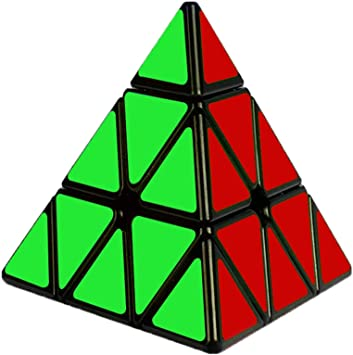

Le pyraminx
Le pyraminx, malgré sa forme triangulaire, est considéré comme un cube. Il est extrêmement simple à apprendre et à maîtriser. Ceci est en effet visible par la simplicité des méthodes plus avancées, et c'est pourquoi je ne vais vous présenter qu'une seule méthode avancée en plus de la méthode pour débutants. Au niveau du modèle, le meilleur Pyraminx est sans aucun doute le "X-Man Bell V2 M". Sans aucune hésitation.
La méthode pour débutants
La méthode pour débutants est une méthode extrêmement simple qui demande de connaître seulement très peu d'algorithmes. Deux étapes : faire une première face couronnée puis échanger ou orienter les trois éléments réellement orientables restants. Une méthode très simple à réaliser.
La méthode 1-Flip [Méthode de speedcubing]
Le méthode 1-Flip fait partie des méthodes très utilisées car elle est très simple. Le but est de réaliser la pyramide du haut sauf une pièce et de refaire le cube autour de cet assemblage.